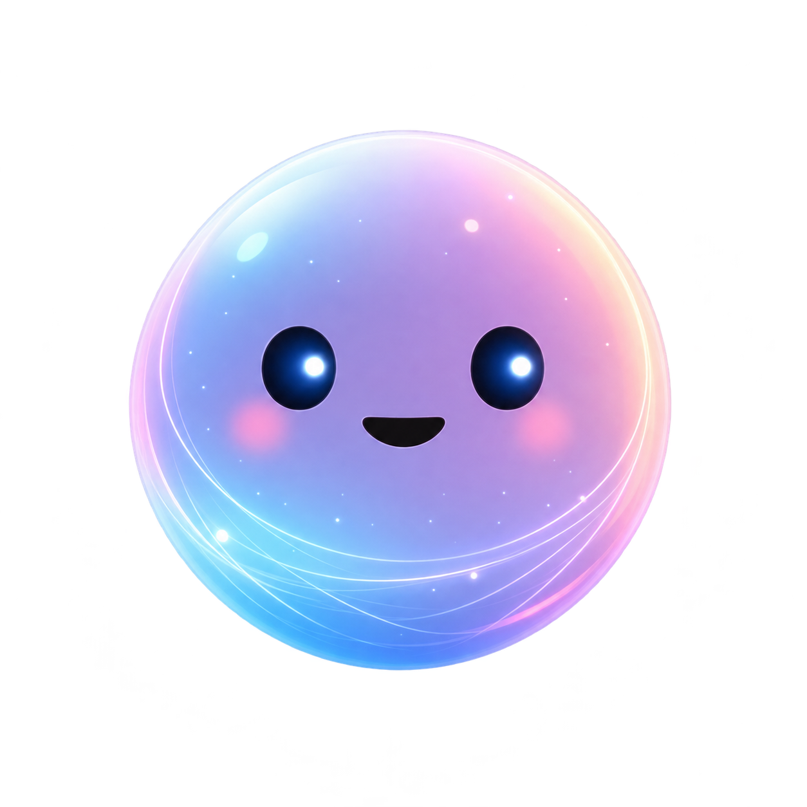

Mindie --:-- Ver previewTu segundo cerebro digital: una mascota que vive en tu PC y se alimenta de lo que sabes.
Guardamos PDFs, enlaces, notas e imágenes por todas partes y luego no los encontramos. MINDIE es una mascota que vive en tu escritorio: la alimentas con tu información, ella la organiza, conecta tus ideas y te ayuda a recuperar tus recuerdos digitales cuando los necesites.
Captura, recupera y explora tu conocimiento.
Arrastra un PDF y ella lo “come”. También puedes subir texto e imágenes, o pegar un enlace: MINDIE extrae el contenido de la página sin imágenes ni publicidad. Mientras procesa, verás animaciones de carga.
Pregunta dentro de la app sobre los documentos que contiene, y revisa o retoma tus conversaciones anteriores gracias al historial.
Visualiza el cerebro de conocimiento y cómo se conecta lo que MINDIE ha aprendido. Y si quieres, ponle tu propia mascota con tus imágenes.
Arrastra PDFs, sube texto o imágenes, o pega un enlace.
MINDIE procesa e interconecta la información con un modelo local de inteligencia artificial.
Chatea con tu conocimiento y explora el grafo de ideas.
Un segundo cerebro digital estilo tamagotchi: una mascota que vive en tu PC, se alimenta de la información que le das, organiza el conocimiento y te ayuda a recuperarlo.
Por defecto trabaja con modelos locales.
PDFs (arrastrándolos hacia la mascota), texto, imágenes y enlaces web, de los que extrae el contenido omitiendo imágenes y publicidad.
Sí, puedes agregar tu propia mascota con tus imágenes ya definidas.
Sí. Las contribuciones son bienvenidas: abre un issue o un pull request en el repositorio.
La primera versión se realizó durante el Hacktoberfest 2026.